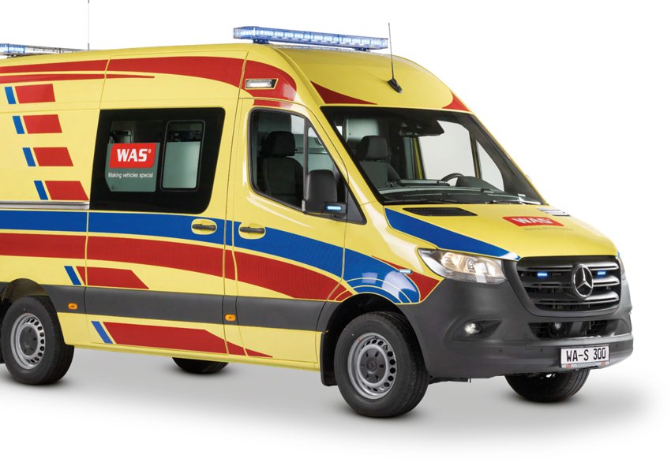
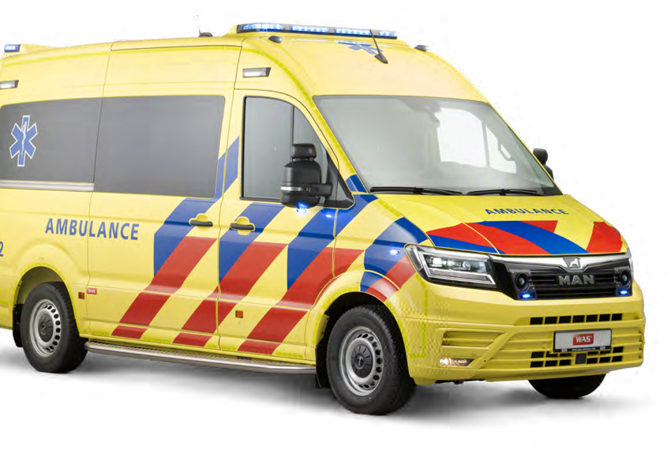

When quality leads, the answer is the Allrounder and the MAN TGE.
The same four WAS ambulances, judged by the highest standard: patient care and the guest's experience first, price last. The Allrounder still ranks first. The MAN TGE rises to second, on three conditions.
IBest overall · 8.5 of 10
RTW Allrounder 4.1 t
Option D · Mercedes Sprinter · EN 1789 emergency ambulance

€150k to €190kEst. ex works
9 / 10Clinical
Full emergency ambulance built to EN 1789.
Inorganic, sealed interior for extreme heat. Compressor fridge.
AC on engine or 230 V shore power. Cool cabin before the patient arrives.
Doctor seat with child belt and Isofix, for families.
Serviced by Mercedes-Benz Egypt, which has a workshop in Hurghada.
IIHighest comfort · 7.3 of 10
RTW 4.25 t on MAN TGE
Option C · MAN TGE 3.180 · 8 speed automatic

€190k to €240kEst. ex works
10 / 10Patient handling
Stryker Power-LOAD: the stretcher lifts and loads itself.
The most modern cabin: patient data on the MAN display, leather seats.
Automatic oxygen switchover, interior camera.
Storage built for the Lucas 3 chest compression device.
Three conditions. MAN service on the Red Sea in writing. Engine made for Egyptian diesel. Dutch radio and livery removed.
Quality first scoring
Price set to zero. Quality carries the weight.
Option
Clinical 40%
Handling 20%
Heat 15%
Service 15%
Other 10%
Score
D · Allrounder
9
8
8
9
8 · 7
8.5
C · MAN TGE
9
10
5
3
5 · 5
7.3
B · Hot‑Country
6
4
9
10
9 · 6
6.8
A · KTW 4x4
5
7
6
8
5 · 9
6.2
Other = running cost 5% and versatility 5%. Scores per criterion as in the full report. Value view (price 20%): D 8.2, B 8.0, A 6.2, C 5.8.
The cost of the best
About €110k to €135k more than the value pair.
Quality pair, D + C. €340k to €430k ex works. About €403k to €510k landed in Egypt with 14% VAT and levies. Customs duty on EU vehicles is zero.
Value pair, D + B. €230k to €295k ex works. Same first vehicle, lower comfort in the second.
The elite alternative. Two Allrounders, the second with powered loading. WAS states the table and stretcher can come from other suppliers. One chassis, one service plan, near C's comfort.
Ask WAS to quote both before the CEO decides. All prices are estimates until then.
HCIG · Ambulance fleet selection · Quality first verdict · ConfidentialFull report with 32 sources: 14 pages